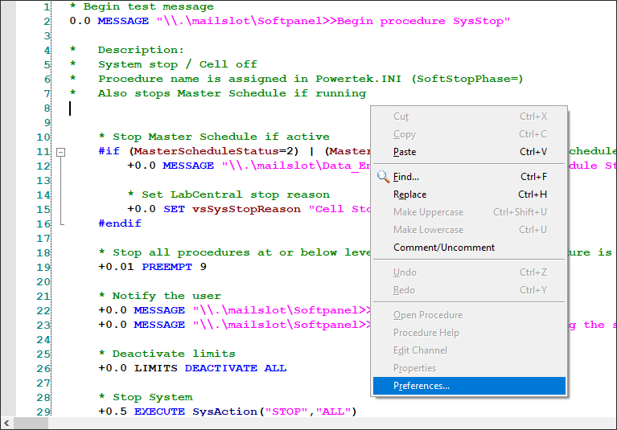
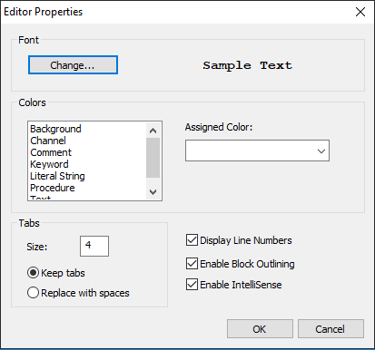

iTest User's Guide
You can access the VCL editor properties by right-clicking in the display area of an active procedure and clicking the Preferences option. This editor includes a number of features that improve the operator’s ability to write and maintain VCL code.
Some of these features include color coding, line numbers, block outlines, and IntelliSense activation, which all provide better control of the editor's look and feel.
VCL Editor Preferences

Preferences Editor Dialog
